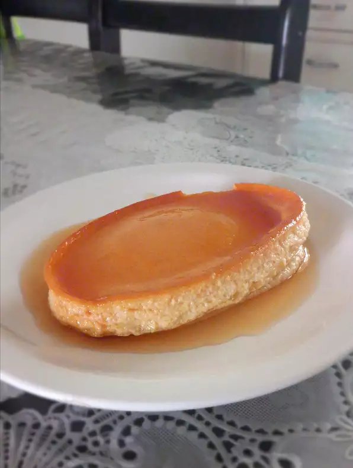

Leche Flan
\
Filipino Leche Flan
My mom would always make this Filipino leche flan for dessert for me and I always loved it.
Ingredients
Caramel:
Custard:
- 1 (13 ounce) can evaporated milk
- 1 (13 ounce) can sweetened condensed milk
- 12 egg yolks
- 1 tablespoon vanilla extract
Directions
- Preheat the oven to 325 degrees F (165 degrees C).
- Combine sugar and water in a saucepan over medium heat. Heat until sugar is dissolved and mixture is thickened and light brown, 7 to 10 minutes. Spread caramel evenly over the inside of a flan mold, tilting the mold to make sure the whole surface is covered.
- Combine evaporated milk, condensed milk, egg yolks, and vanilla extract in a large bowl. Stir lightly to prevent bubbles or foam from forming. Strain batter slowly into the caramel-lined flan mold. Cover with aluminum foil. Place mold onto a baking pan filled with water.
- Bake in the preheated oven until firm, about 1 hour. Let cool, about 30 minutes. Invert carefully onto a platter.
Home